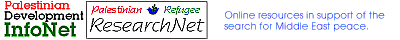

Advertisement: Click here
human rights
- A.I.C. - The Alternative Information Center: http://aic.netgate.net - AIC is a joint Israeli-Palestinian human rights group based in Jerusalem. The website has an attractive layout, has a Frames version and lots of information to explore. Review last updated: 17 November 1996.
- Birzeit University, Human Rights Action Project: http://www.birzeit.edu/hrap - Birzeit's Human Rights Action Project, founded in 1977, has followed the case of every student, faculty and staff member detained by the Israeli military authorities, as well as "cases of restriction orders, house raids, deportation, and denial of freedom of movement and travel as it relates to university and academic activities". The website offers a link to the university Human Rights and Press Release Archives, depositories of publications and press releases by the project and Birzeit's Public Relations Office concerned with human rights issues. An excellent new feature on the problems of Gazan students studying in the West Bank, Academic Freedom First, is now available. Review last updated: 5 February 1997.
- B'Tselem, the Israeli Center for Human Rights in the Occupied Territories: http://www.btselem.org - B'Tselem may not at first glance seem to qualify for an inclusion in the "Complete Guide to Palestine's Websites". However, the organisation employs Palestinian field workers, works exclusively on human rights violations resulting from the military occupation and has consistently and courageously reported on the repression of the Birzeit University community. Currently featuring a campaign on Gazan students. For this, they are more than entitled to be part of this guide. The website is replete with downloadable reports, presented in a crisp design. What more needs to be said? Added to Complete Guide: 12 November 1996 / Review & URL last updated: 6 February 1997.
- LAW - The Palestinian Society for the Protection of Human Rights and the Environment: http://www.birzeit.edu/lawe/- LAW, a Palestinian Human Rights organization based in Jerusalem, was founded in 1990 by a group of Palestinian lawyers to promote human rights and further the principles of the rule of law, and to defend Palestinian rights in accordance with international human rights law and United Nations declarations. This site is easy to navigate and is a dream come true for all you fact addicts out there. It houses an invaluable directory of LAW press releases from 1994 until present, a comprehensive archive of LAW publications, reports concerning the Palestinian Authority, on-line reports covering environmental issues and human rights violations of the Israeli Occupation, as well as promising to offer back issues of its very colorful and informative People's Rights magazine in the very near future. The site is well worth the mouse clicks.Added to Complete Guide: 13 August 1997/ Reviewed by Hanan Elmasu.
- Palestinian Human Rights Monitoring Group: http://www.lebnet.com/phrmg/ - The Palestinian Human Rights Monitoring Group is a new human rights organization founded by Bassem Eid towards the end of last year. The site asserts that "the creation of a new Palestinian human rights is necessary because some parts of the human rights community in Palestine have become hesitant, treating the violations of the Palestinian Authority differently than those of Israel." The site has a simple, attractive frames layout, a special report on the death penalty in the West Bank and Gaza, and electronic editions of it's newsletter (two issues as of 4 April) which carefully document human rights abuses by both the Israeli government and the PA. Added to Complete Guide: 7 May 1997 / Reviewed by Michael O'Neill.
- Women's Affairs Technical Committee (WATC): http://www.pal-watc.org/body.htm- WATC is essentially a human rights coalition, working together "for the realisation of the abolishment of all forms of discrimination against women in the preparation for the build up of a civic democratic society characterized by quality and social justice." Reads like that famous line in Oslo 2, doesn't it? Information can be found on their networking, lobbying, campaigning, training, human rights education and publications.Added to Complete Guide: 5 February 1997.

Text only links:
| home | academic & research | business & commerce | education |
| government & services |
human rights | internet services | media |
| organizations & associations | personal homepages | tourism & culture |
| websites about palestine | internet search engines | the palestine archive |
| add your url | golden olive awards? | advertise on this site |
The Complete Guide is maintained by the Birzeit Webmaster, webmaster@birzeit.edu